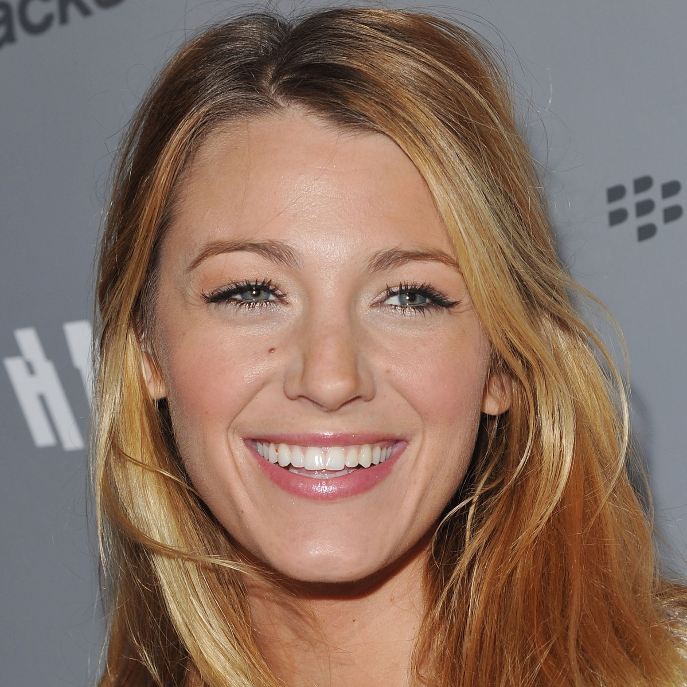
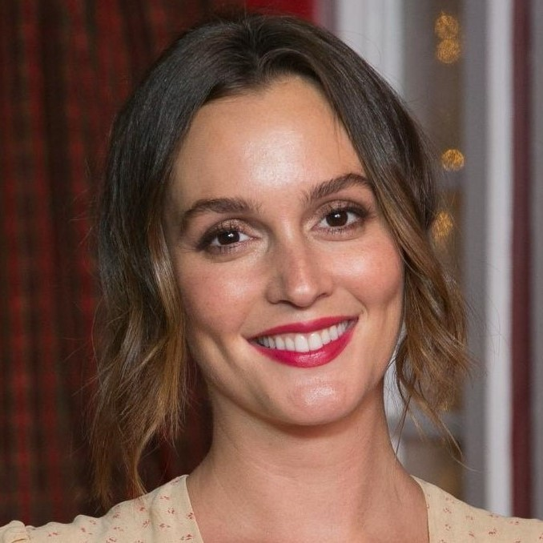
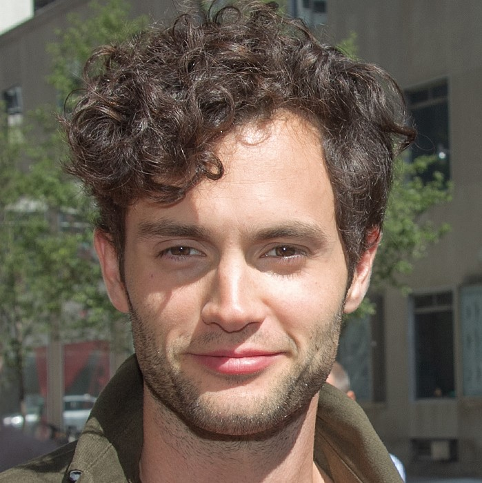
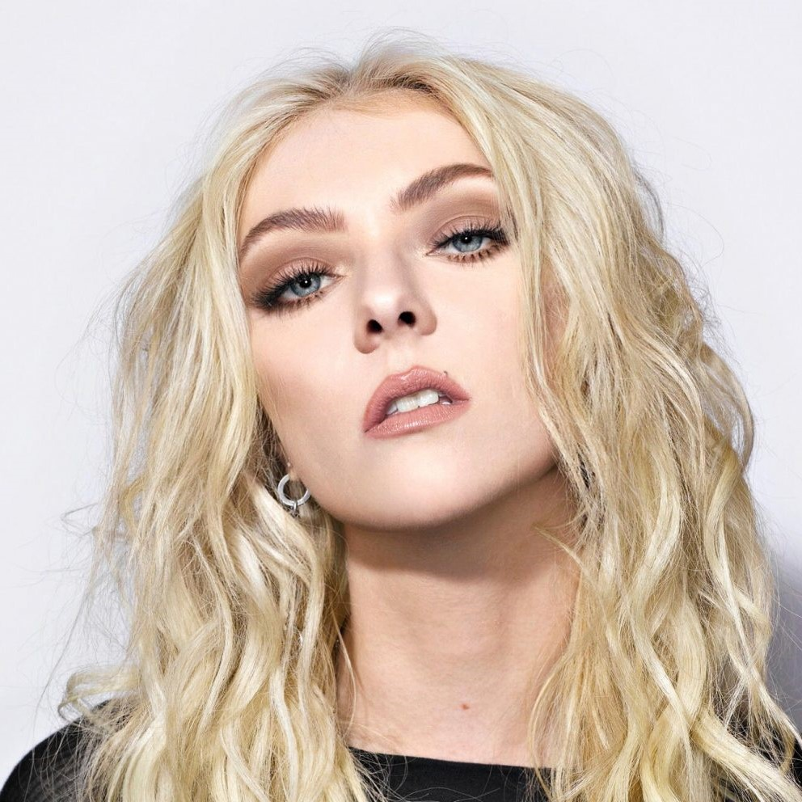
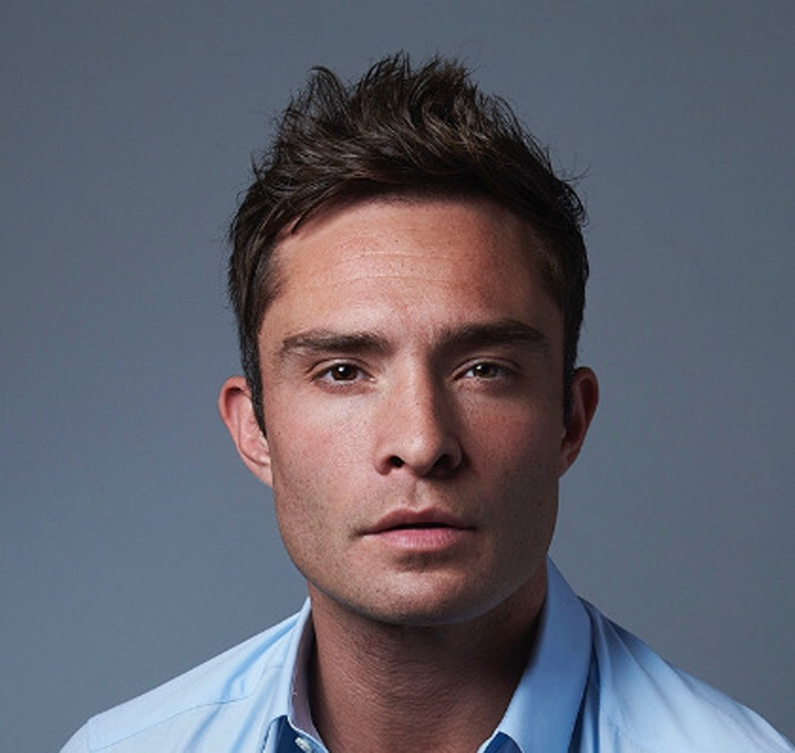
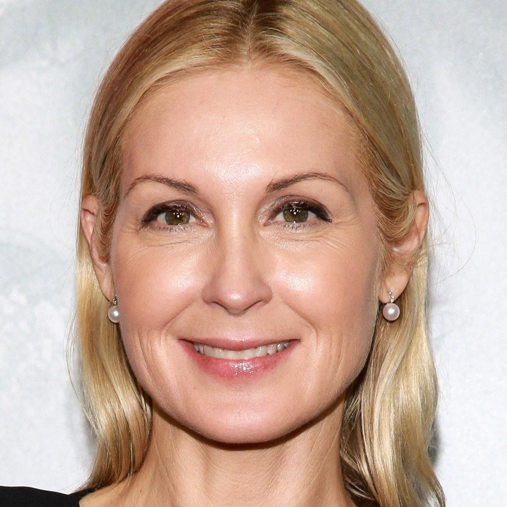
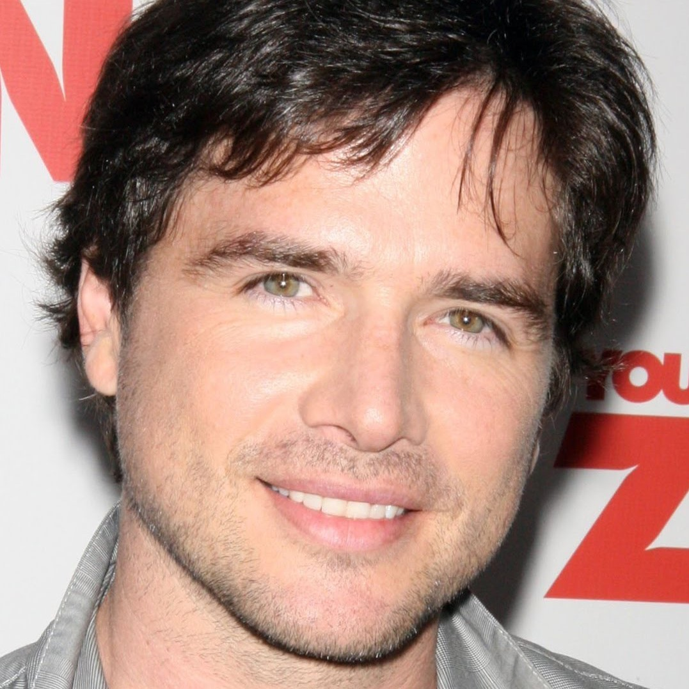

GOSSIP GIRL CAST
|  | Blake Lively as Serena van der Woodsen, a student at the Constance Billard School for Girls. An it girl who frequently receives media attention. Born: August 25, 1987 (age 34 years), Tarzana, Los Angeles, California, United States |
|  | Leighton Meesteras Blair Waldorf, the Queen Bee of Constance Billard. Best friends with Serena and highly focused on status, wealth and academic achievement. Chuck and her relationship is a key theme throughout all 6 seasons. Born: April 9, 1986 (age 36 years), Fort Worth, Texas, United States |
|  | Penn Badgley as Dan Humphrey, a student at St. Jude's School for Boys. Dan initially does not fit in with the Upper East Side teenagers as he lives in Brooklyn and is not a legacy student, but rather attends St. Jude's with a partial scholarship. Dan aspires to be a writer. Born: November 1, 1986 (age 35 years), Baltimore, Maryland, United States |

|
Chace Crawford as Nate Archibald, a student at St. Jude's. Blair's childhood boyfriend and the UES golden boy. Born: July 18, 1985 (age 37 years), Lubbock, Texas, United States |
|  | Taylor Momsen as Jenny Humphrey, a student at Constance Billard's and Dan's younger sister. Jenny dreams of becoming a fashion designer, who begins as one of Blair's minions in order to gain status. She later rejects the Upper East Side life and becomes rivals with Blair and sleeps with Chuck. Born: July 26, 1993 (age 28 years), St. Louis, Missouri, United States |
|  | Ed Westwick as Chuck Bass, a student at St. Jude's. Son of one of New York's most successful real estate moguls. Decadent and amoral, Chuck is mainly interested in women and alcohol. Once his father dies in the second season, he inherits Bass Industries and becomes a young billionaire. He is romantically involved with Blair throughout the series but they do not start officially dating until the third season. Blair and Chuck's relationship is a key theme throughout all 6 seasons. Born: June 27, 1987 (age 35 years), Stevenage, United Kingdom |
|  | Kelly Rutherford as Lily van der Woodsen (née Rhodes), Serena's and Eric's mother and a three-time divorcée. A former photographer, Lily has become one of the UES's most influential socialites. Her and Serena often have a strained and rocky relationship. Born: November 6, 1968 (age 53 years), Elizabethtown, Kentucky, United States |
|  | Matthew Settle as Rufus Humphrey, Dan and Jenny's father. Former rockstar as the lead singer for the band Lincoln Hawk, a 90s one-hit wonder, Rufus now owns a gallery in Brooklyn. Rufus shares a romantic history with Lily, whom he marries in season 3 but divorces in season 6. Born: September 17, 1969 (age 52 years), Hickory, North Carolina, United States |